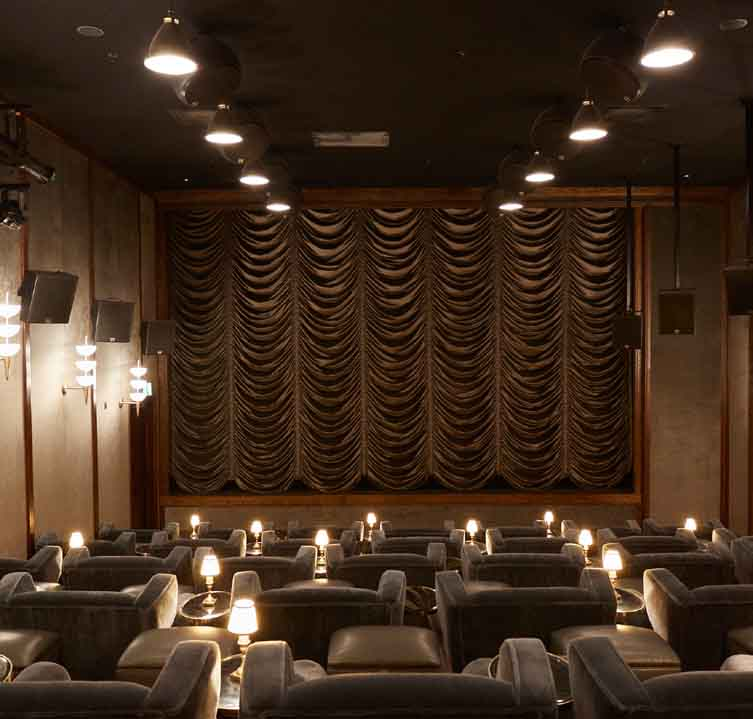
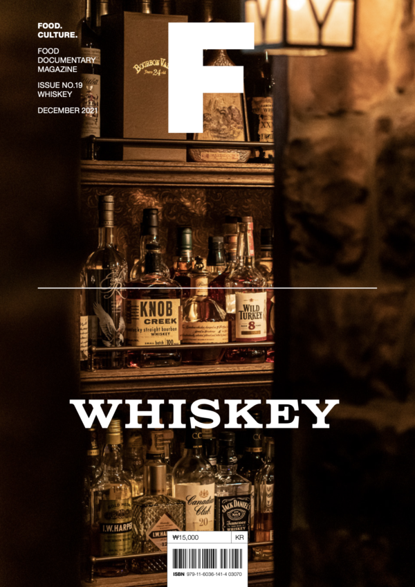

1995년 런던 소호 지구에 문을 연 소호 하우스는 '집처럼 편안힌 곳'을 모토로 시대를 뛰어넘는, 새로운 개념의 커뮤니티를 선보였다.
진취적 성격의 멤버십 클럽
소호 하우스는 권력과 부를 중심으로 모인 남성 위주의 멤버십 클럽과 달리 영화나 음악 산업 등에 종사하는 창의적인 사람들을 대상으로 1995년 런던에서 닉 존스가 설립한
진취적
성격의
멤버십클럽입니다. 창립자 닉 존스는 '마치 내 집처럼 편안한 곳'에서 비슷한 취향을 지닌 사람들과 함께 온종일 마시고 먹고 즐기는 생활을 바랐고, 이러한 정신은 곧 소호
하우스를
상징하는
콘셉트로 자리 잡았습니다. 멤버십 클럽으로는 이례적으로 유럽 전역과 미곡, 아시아 등에 27개의 클럽 하우스를 운영함과 동시에 스파, 홈 컬렉션, 레스토랑 등의 브랜드를
전개하며
소호
하우스식
라이프스타일을 제안하고 있습니다.
평등주의에 입각한 예술적 사교 모임
닉이 소호하우스를 오픈할 때 염두에 둔것은 집처럼 편안한 공간이다. 집이라는 단어를 사용해 멤버쉽 클럽의 이름을 정한것도 그 때문이다.
"마치 내 집처럼 편안한 곳(Home away from home) 입니다." 닉은 소호 하우스가 자신의 삶의 목표를 이룰 수 있는 환상의 집이길 바랐다.
결국 이는 소호하우스만의 독점성(exclusivity)이 됐다. 소호 하우스가 갖는 독점성은 사회적 지위에서 비롯한 게 아니다.
만약 누군가가 소호 하우스의 멤버가 되고싶다면 자신의 연봉이나 집안, 국적이 아닌 소호하우스에 자신이 어떤 가치를 가져올수있다고 믿는지에 대한 설명을 써서 제출해야 한다.
트위터로 공유
페이스북로 공유
구글로 공유
관련 매거진

사이클링 패션의 새로운 패어다임을 제시한
사이클링 패션의 새로운 패어다임을 제시한
사이클링 패션의 새로운 패어다임을 제시한
사이클링 패션의 새로운 패어다임을 제시한
BRAND STORY
애슬레저 브랜드의 탄생 : LULULEMON
세계 최초 모듈형 가구의 탄생 : USM
존 쿠퍼가 재정의한 미니: MINI
사이클링 패션의 새로운 패어다임을 제시한 라파 : Rapha
INTERVIEW
BEST MAGAZINE

사이클링 패션의 새로운 패어다임을 제시한 라파사이클링 패션의 새로운 패어다임을 제시한 라파
사이클링 패션의 새로운 패어다임을 제시한 라파사이클링 패션의 새로운 패어다임을 제시한 라파
사이클링 패션의 새로운 패어다임을 제시한 라파사이클링 패션의 새로운 패어다임을 제시한 라파
사이클링 패션의 새로운 패어다임을 제시한 라파사이클링 패션의 새로운 패어다임을 제시한 라파